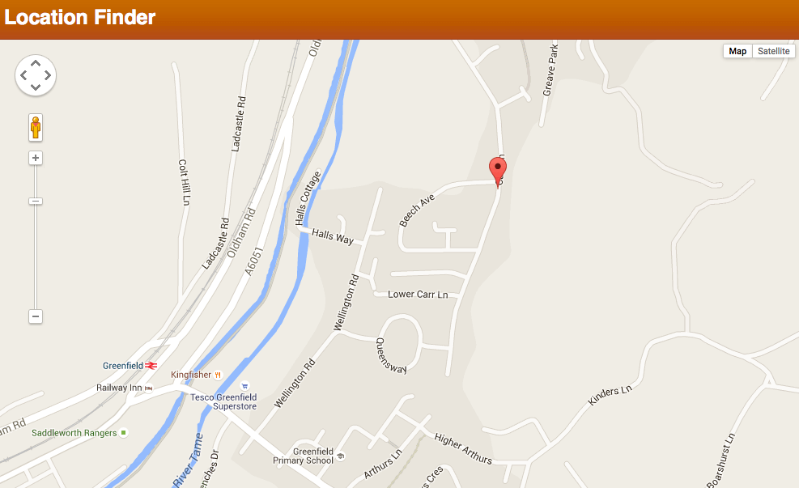

{{DefaultAPISidebar("Permissions API")}}{{SeeCompatTable}}
This article provides a basic guide to using the W3C Permissions API, which provides a programmatic way to query the status of API permissions attributed to the current context.
Let's face it, permissions on the Web are a necessary evil, and they are not much fun to deal with as developers.
Historically, different APIs handle their own permissions inconsistently — for example the Notifications API allows for explicit checking of permission status and requesting permission, whereas the Geolocation API doesn't (which causes problems if the user denied the initial permission request, as we'll see below).
The Permissions API provides the tools to allow developers to implement a better user experience as far as permissions are concerned. For example, it can query whether permission to use a particular API is granted or denied, and specifically request permission to use an API.
At the moment, implementation of the API is at an early stage, so support in browsers is pretty spotty:
More features will be added as time progresses.
For this article, we have put together a simple demo called Location Finder. It uses Geolocation to query the user's current location and plot it out on a Google Map:

You can run the example live, or view the source code on Github. Most of the code is simple and unremarkable — below we'll just be walking through the Permissions API-related code, so check the code yourself if you want to study any of the other parts.
The {{domxref("Navigator.permissions")}} property has been added to the browser to allow access to the global {{domxref("Permissions")}} object. This object will eventually include methods for querying, requesting, and revoking permissions, although currently it only contains {{domxref("Permissions.query()")}}; see below.
In our example, the Permissions functionality is handled by one function — handlePermission(). This starts off by querying the permission status using {{domxref("Permissions.query()")}}. Depending on the value of the {{domxref("PermissionStatus.state", "state")}} property of the {{domxref("PermissionStatus")}} object returned when the promise resolves, it reacts differently:
"granted""prompt"revealPosition() function if permission is granted (which shows the map), or the positionDenied() function if permission is denied (which makes the "Enable Geolocation" button appear)."denied"function handlePermission() {
navigator.permissions.query({name:'geolocation'}).then(function(result) {
if (result.state == 'granted') {
report(result.state);
geoBtn.style.display = 'none';
} else if (result.state == 'prompt') {
report(result.state);
geoBtn.style.display = 'none';
navigator.geolocation.getCurrentPosition(revealPosition,positionDenied,geoSettings);
} else if (result.state == 'denied') {
report(result.state);
geoBtn.style.display = 'inline';
}
result.onchange = function() {
report(result.state);
}
});
}
function report(state) {
console.log('Permission ' + state);
}
handlePermission();
The {{domxref("Permissions.query()")}} method takes a PermissionDescriptor dictionary as a parameter — this contains the name of the API you are interested in. Some APIs have more complex PermissionDescriptors containing additional information, which inherit from the default PermissionDescriptor. For example, the PushPermissionDescriptor should also contain a Boolean that specifies if userVisibleOnly is true or false.
Starting in Firefox 47, you can now revoke existing permissions, using the {{domxref("Permissions.revoke()")}} method. This works in exactly the same way as the {{domxref("Permissions.query()")}} method, except that it causes an existing permission to be reverted back to its default state when the promise successfully resolves (which is usually prompt). See the following code in our demo:
var revokeBtn = document.querySelector('.revoke');
...
revokeBtn.onclick = function() {
revokePermission();
}
...
function revokePermission() {
navigator.permissions.revoke({name:'geolocation'}).then(function(result) {
report(result.state);
});
}
The revoke() function has been disabled by default starting in Firefox 51, since its design has been brought into question in the Web Applications Security Working Group. It can be re-enabled by setting the preference dom.permissions.revoke.enable to true.
You'll notice that there is an onchange event handler in the code above, attached to the {{domxref("PermissionStatus")}} object — this allows us to respond to any changes in the permission status for the API we are interested in. At the moment we are just reporting the change in state.
At the moment this doesn't offer much more than what we had already. If we choose to never share our location from the permission prompt (deny permission), then we can't get back to the permission prompt without using the browser menu options:
However, future additions to browser functionality should provide the request() method, which will allow us to programmatically request permissions, any time we like. These should hopefully be available soon.